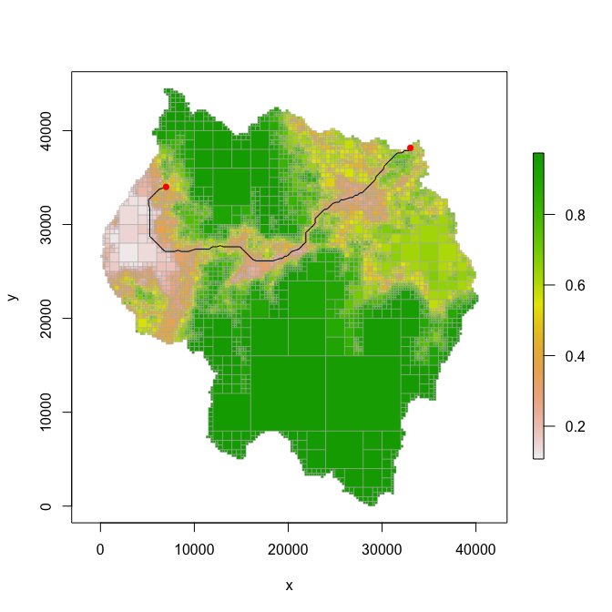

This package provides functionality for working with raster-like quadtrees, which allow for variable-sized cells.
Installation
The package can be installed with the following R command:
devtools::install_gitlab("dafriend/quadtree")For documentation of all the functions, see the PDF file stored at the root directory.
Example
A quadtree object is created from a raster or matrix:
library(quadtree)
library(sp)
library(raster)
#>
#> Attaching package: 'raster'
#> The following objects are masked from 'package:quadtree':
#>
#> projection, projection<-
data(habitat, package="quadtree") #load sample data
qt = quadtree(habitat, split_threshold=.03, split_method="sd") #create a quadtree
par(mfrow=c(1,2), mar=c(3,2,2,2))
plot(habitat, zlim=c(0,1), main="raster representation", axes=FALSE, box=FALSE)
plot(qt, crop=TRUE, na_col=NULL, border_lwd=.2,xlab="", ylab="", legend=FALSE, zlim=c(0,1), main="quadtree representation", axes=FALSE)
The package allows for flexibility in the quadtree creation process. Several functions defining how to split and aggregate cells are provided, and custom functions can be written for both of these processes. In addition, quadtrees can be created using other quadtrees as “templates”, so that the new quadtree has the identical structure as the template quadtree.
Once created, cell values can be extracted, as with a raster:
pts = cbind(c(20000,32000,5000),c(10000,30000,27000))
extract(qt,pts)
#> [1] 0.9692383 0.5340000 0.1364531In addition, functions are provided for calculating least-cost paths using the quadtree as a resistance surface.
start_point = c(6989,34007)
end_point = c(33015,38162)
lcp_finder = lcp_finder(qt, start_point)
lcp = find_lcp(lcp_finder, end_point, use_original_end_points = TRUE)
plot(qt, border_col="gray70", crop=TRUE, na_col=NULL, border_lwd=.5)
lines(lcp[,1:2])
points(rbind(start_point, end_point), col="red", pch=16)
Learning how to use the quadtree package
Currently there are no vignettes, as this package is still in development, although in the future I hope to add some. However, all of the functions in the package are well documented and have extensive examples that the user can run. To understand the basics of the library, I’d recommend first reading the documentation for quadtree (i.e. run ?quadtree in the console) first - this help file contains all the basic info on what a quadtree is and how it is constructed. To learn more about the least-cost path functionality, start with the documentation for ?lcp_finder and also take a look at ?find_lcp and ?find_lcps.
Most of the other functions are quite simple - take a look at the PDF manual included in the repository for information on how to use them.
File structure
The code here mostly conforms to the standard R package structure. The exception is the ‘other_files’ folder.
- /R - contains the R files
- /data - contains Rdata files (.rda) containing sample data
- /man - contains the documentation files
- /other_files - contains ‘scratchwork’ scripts that I use to test the package functionality. This folder is ignored when the package is built.
- /src - contains the C++ code
- /tests - contains unit tests
Implementation Details
The bulk of the code is written in C++ and interfaced with R via Rcpp.
The overall design philosophy was to keep the core C++ code completely independent from the R code (i.e. no Rcpp-related code in the core C++ files.) This results in a three-tiered organization of the code - core C++ code, Rcpp C++ code, and R code.
Core C++ code
This consists of the following files (only the .h files are listed to avoid redundancy, but each of these files has a corresponding .cpp file):
- Matrix.h - Defines the Matrix class implementing basic matrix funcitonality
- Node.h - Defines the Node class, which are the ‘nodes’ of the quadtree
- Point.h - Defines a simple Point class
- PointUtilities.h - Defines a namespace containing functions for performing calculations with Point objects
- Quadtree.h - Defines the Quadtree class, which can be seen as a wrapper that provides a link to the interconnected nodes that make up the quadtree
- ShortestPathFinder.h - Defines a class for finding the least-cost paths using a quadtree as a cost surface
As mentioned before, these files are completely independent of R and can be built and run independently of R.
Rcpp C++ code
These files are called ‘wrappers’ - essentially they each contain an instance of the relevant object and provide additional Rcpp-related functions that can be accessed from R. These essentially provide the “bridge” that allows the functionality in the core C++ files to be accessed from R.
- NodeWrapper.h - wrapper class for ‘Node’. This class is exposed to R as ‘CppNode’.
- QuadtreeWrapper.h - wrapper class for ‘Quadtree’. This class is exposed to R as ‘CppQuadtree’.
- ShortestPathFinderWrapper.h - wrapper class for ‘ShortestPathFinder’. This class is exposed to R as ‘CppShortestPathFinder’.
- R_Interface.h - defines a namespace that currently contains only a single function, which converts an Rcpp matrix to the Matrix class I created. This function is separate from the other files because it is a general-purpose function and thus didn’t fit in any of the wrapper classes.
- load_modules.cpp - contains code that exposes the wrapper classes to R using Rcpp modules.
R code
Almost all of the core functionality of the quadtree package is contained in the C++ code, and the R code serves primarily as an interface for working with the C++ quadtree data structure. A Quadtree S4 class is defined which consists only of one slot, which contains a ‘CppQuadtree’ object. The methods for this class are often quite simple, merely consisting of calling one of the methods on the CppQuadtree object. Using this approach has a few benefits. First, wrapping the C++ class in an S4 class allows the quadtree functionality to be accessed in a way that is much more consistent with typical R syntax, which will hopefully be more intuitive to R users. Second, it allows for me to add R code to validate and make any necessary modifications to parameters before calling the C++ methods - this helps make the functions more robust. This also allows me to take advantage of existing R functionality (for example, resampling a raster from the ‘raster’ package).
I won’t discuss each R file/function here - see the documentation PDF for details on each R function.